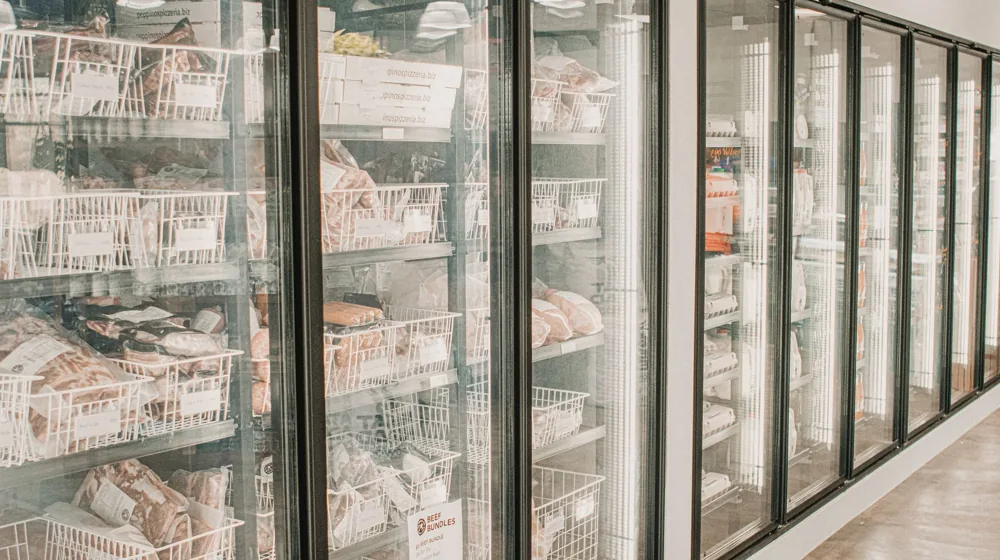

냉동실 식품, 이렇게 보관하면 버립니다: 안전한 보관 5가지 원칙
사진: James Frid / Pexels (무료 이미지, 출처 표기)
왜 냉동실 보관이 중요할까요?

음식물 쓰레기를 줄이고 식비를 절약하는 가장 효과적인 방법 중 하나는 바로 냉동 보관입니다. 하지만 단순히 식품을 냉동실에 넣는다고 해서 모든 문제가 해결되는 것은 아닙니다. 잘못된 냉동 보관은 오히려 식재료의 신선도를 떨어뜨리고, 맛과 영양은 물론 위생에도 좋지 않은 영향을 미칠 수 있습니다.
냉동 보관의 목적은 식품의 변질을 막고 영양소를 최대한 유지하는 것입니다. 이 글에서는 냉동식품을 오래, 그리고 안전하게 보관할 수 있는 실질적인 원칙과 주의사항을 알려드립니다.
냉동식품, 얼마나 오래 보관할 수 있을까?
냉동식품의 보관 기간은 식품의 종류, 포장 상태, 냉동고의 온도 등 다양한 요인에 따라 달라집니다. 일반적으로 -18°C 이하의 온도를 유지하는 것이 중요하며, 식품의약품안전처 등 공식 기관에서는 아래와 같은 일반적인 보관 기간을 권장합니다.
- **육류:** 보통 6~12개월 (다짐육 3~4개월, 스테이크 6~9개월)
- **가금류:** 통닭 1년, 손질된 부위 9개월
- **생선:** 기름기가 적은 흰살 생선 6~8개월, 기름기가 많은 등푸른 생선 2~3개월
- **조리된 식품:** 2~3개월
- **과일/채소:** 8~12개월 (수분 함량에 따라 차이)
이 기간은 일반적인 가이드라인이며, 각 식품 포장지에 표기된 유통기한 및 보관 방법을 우선 확인하는 것이 가장 정확합니다. 개봉 후에는 보관 기간이 현저히 짧아질 수 있으니 주의해야 합니다.
냉동실 스마트하게 활용하는 5가지 원칙
냉동식품의 품질을 최상으로 유지하기 위한 필수적인 5가지 원칙을 소개합니다.
- 공기 접촉 최소화: 식품이 공기에 노출되면 산화되거나 ‘냉동고 번(Freezer Burn)’ 현상(식품의 수분이 증발하며 마르고 색이 변하는 현상)이 발생하여 맛과 질감이 저하됩니다. 밀폐 용기, 지퍼백, 진공 포장기 등을 사용하여 공기를 최대한 제거하고 밀봉해야 합니다.
- 소분하여 보관: 한 번에 사용할 양만큼 나눠서 보관하면 필요한 만큼만 꺼내 해동할 수 있어 편리하며, 남은 식품의 재냉동을 막아 신선도 유지에 도움이 됩니다.
- 라벨링 습관화: 냉동한 날짜와 내용물을 적어 붙이는 습관을 들여 ‘선입선출’ 원칙(먼저 넣은 것을 먼저 꺼내 쓰는 것)을 지키고, 불필요하게 오래 보관되는 식품을 방지합니다.
- 급속 냉동: 식품을 빠르게 얼리면 세포 손상을 최소화하고 얼음 결정이 작게 형성되어 해동 시 원래의 식감과 영양을 더 잘 유지할 수 있습니다. 냉동실에 여유 공간이 있다면 빨리 얼 수 있도록 평평하게 펴서 넣거나, 냉동실 온도를 일시적으로 낮추는 기능(급속 냉동)을 활용합니다.
- 냉동실 적정 온도 유지: 냉동실은 -18°C 이하의 온도를 꾸준히 유지해야 세균 번식을 억제하고 식품의 장기 보관이 가능합니다. 너무 자주 문을 열거나 내용물을 과도하게 채우면 온도가 불안정해질 수 있으니 주의하세요.
해동과 재냉동, 이것만은 꼭 지키세요
안전한 해동은 식중독을 예방하고 식품의 품질을 유지하는 데 매우 중요합니다.
특히, **한번 해동된 식품은 절대 다시 얼리지 마세요.** 해동 과정에서 세균이 번식하기 시작하며, 재냉동 시 세균 증식이 가속화되고 식품의 맛, 질감, 영양소가 크게 저하될 수 있습니다. 부득이하게 재냉동해야 한다면, 반드시 완전히 익힌 상태로 조리한 후 재냉동해야 합니다.
냉동 보관하면 안 되는 의외의 식품들
모든 식품이 냉동 보관에 적합한 것은 아닙니다. 다음과 같은 식품들은 냉동 시 품질이 크게 떨어지거나 상할 수 있어 주의해야 합니다.
- **수분 함량이 높은 채소/과일:** 상추, 오이, 수박, 멜론 등은 냉동 시 수분이 얼어 세포벽이 파괴되면서 해동 후 물러지고 식감이 변합니다.
- **유제품:** 우유, 요거트, 생크림, 마요네즈 등은 냉동 시 유지방과 수분이 분리되어 덩어리가 지거나 원래의 부드러운 질감을 잃게 됩니다.
- **튀김류:** 냉동하면 튀김옷이 눅눅해지고 바삭한 식감을 잃습니다.
- **삶은 달걀:** 흰자 부분이 고무처럼 질겨지고 식감이 나빠집니다.
- **감자, 고구마 등 뿌리채소:** 생감자를 냉동하면 해동 후 물컹해지고 단맛이 강해지며, 튀긴 감자도 바삭함을 잃습니다.
건강하고 경제적인 냉동식품 생활을 위한 팁
냉동실을 효과적으로 관리하면 식재료 낭비를 줄이고 항상 신선한 음식을 즐길 수 있습니다. 위에서 언급된 원칙들을 잘 지키고, 냉동실 내부를 주기적으로 정리하고 청소하여 위생을 유지하는 것이 중요합니다. 냉동실 정리를 위한 보관 용기나 트레이를 활용하면 효율성을 더욱 높일 수 있습니다.
이 가이드라인을 통해 냉동식품을 더욱 안전하고 맛있게 즐기시길 바랍니다. 정확한 사항은 각 식품의 공식 홈페이지나 해당 기관에서 다시 확인하시길 권장합니다.
🔗 이 글도 함께 보면 좋아요: 번아웃, 혹시 나도? 놓치면 후회할 자가진단 체크리스트 5가지 증상
관련 추천 상품
냉동 용기, 식품 진공포장기, 냉동실 정리함 관련 인기 상품 보러가기
이 포스팅은 쿠팡 파트너스 활동의 일환으로, 이에 따른 일정액의 수수료를 제공받습니다.